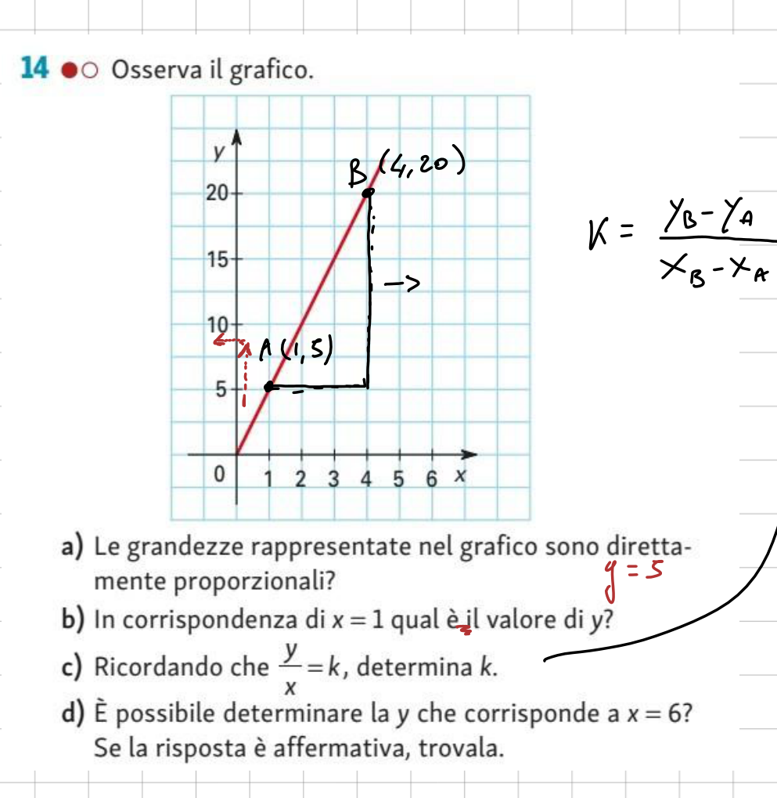
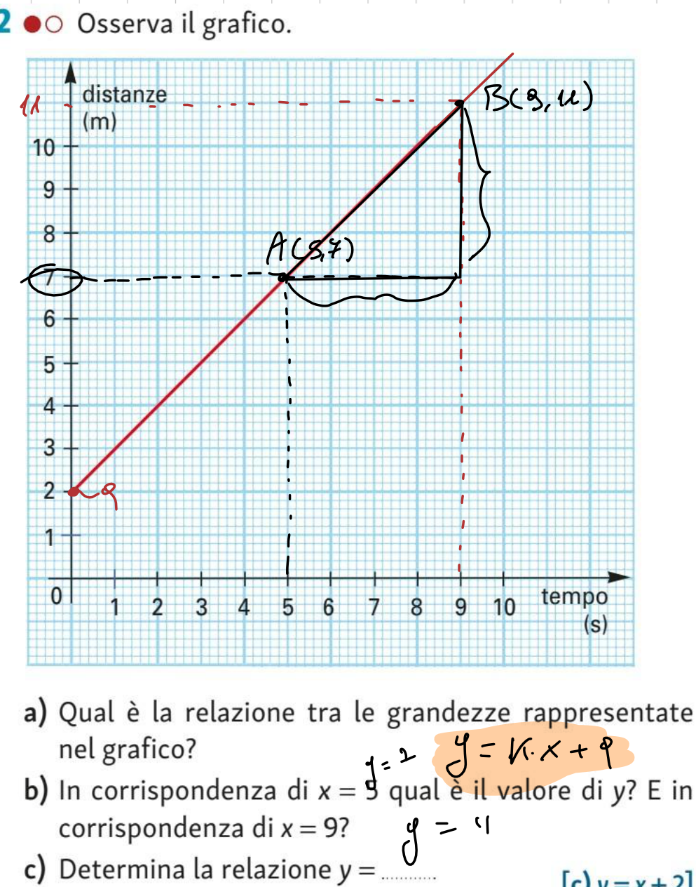
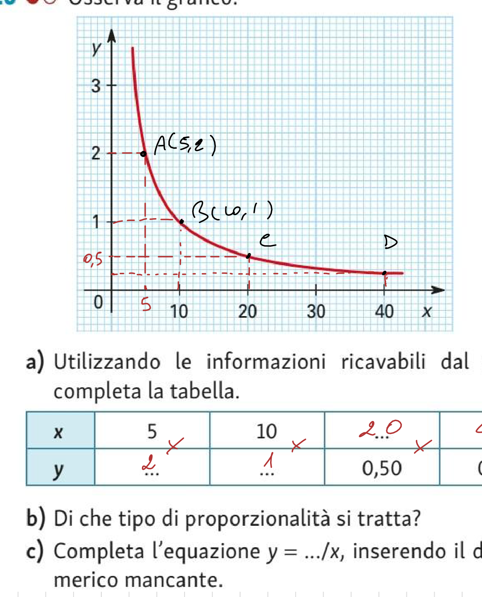
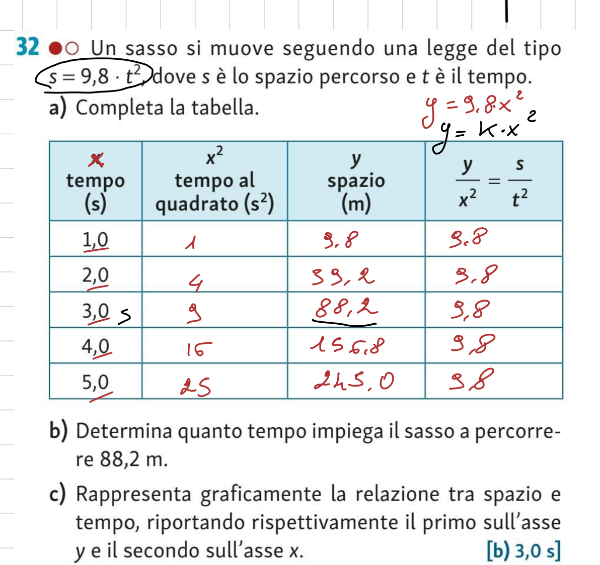
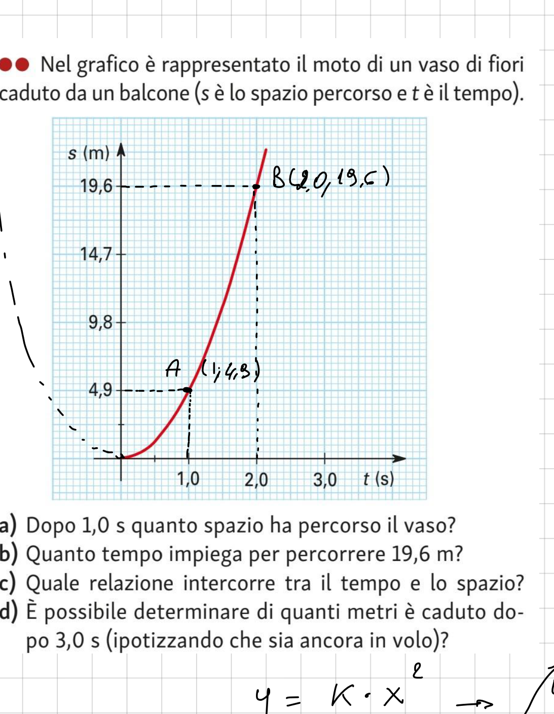
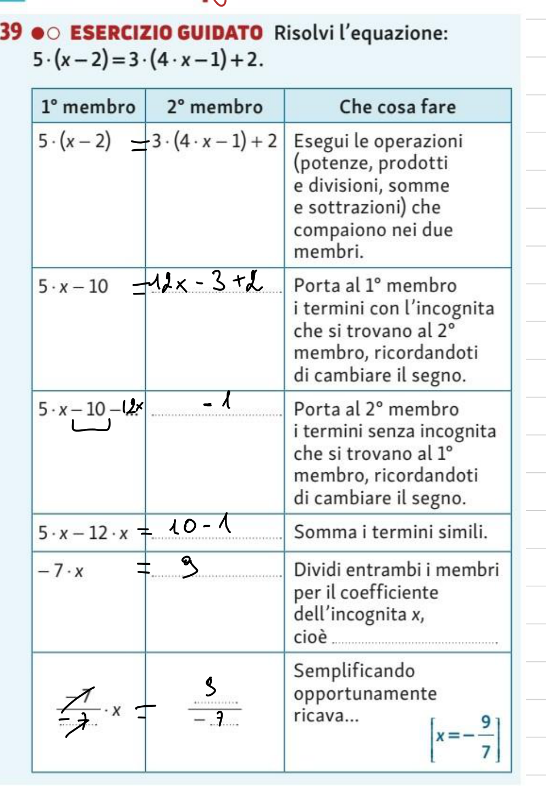

Fisica – Classe 1B
1. Il Metodo Scientifico Sperimentale e le Grandezze Fisiche
La fisica indaga la natura mediante il metodo sperimentale galileiano, fondato sul connubio inscindibile tra osservazione, ipotesi matematica, cimento sperimentale (in laboratorio con parametri controllati) ed enunciazione della legge universale.
Una proprietà della materia o di un fenomeno è una grandezza fisica se e solo se è definita mediante una procedura di misura oggettiva e ripetibile con uno strumento campione tarato: $$\text{Misura } x = \{x\} \cdot [u]$$ dove $\{x\}$ è la misura numerica scalare e $[u]$ è l'unità di misura omogenea.
| Grandezza Fondamentale SI | Simbolo | Unità di Misura | Simbolo Unità | Costante Universale di Riferimento (2019) |
|---|---|---|---|---|
| Lunghezza | $l, s, d$ | metro | $\text{m}$ | Velocità della luce nel vuoto $c$ |
| Massa | $m$ | chilogrammo | $\text{kg}$ | Costante di Planck $h$ |
| Intervallo di Tempo | $t$ | secondo | $\text{s}$ | Frequenza iperfine del cesio $\Delta\nu_{\text{Cs}}$ |
| Intensità di Corrente | $I$ | ampere | $\text{A}$ | Carica elementare fondamentale $e$ |
| Temperatura Termodinamica | $T$ | kelvin | $\text{K}$ | Costante di Boltzmann $k_B$ |
| Quantità di Sostanza | $n$ | mole | $\text{mol}$ | Costante di Avogadro $N_A$ |
| Intensità Luminosa | $I_v$ | candela | $\text{cd}$ | Efficacia luminosa spettrale $K_{\text{cd}}$ |
2. Gli Strumenti di Misura e la Bilancia a Bracci Uguali
Gli strumenti di misura sono caratterizzati da portata (massimo valore misurabile), sensibilità (minima variazione rilevabile), prontezza, accuratezza e precisione.
3. Incertezze di Misura e Teoria degli Errori
In fisica non esiste la misura esatta. Gli errori si dividono in: errori sistematici (dovuti a difetti dello strumento o della procedura, correggibili) ed errori casuali (fluttuazioni statistiche inevitabili).
Per una serie di $N$ misure ripetute, il valore attendibile è la media aritmetica $\bar{x} = \frac{1}{N}\sum x_i$ e l'incertezza assoluta è la semidispersione massima: $$\Delta x = \max\left(\frac{x_{\max} - x_{\min}}{2}, \; \text{Sensibilità}\right)$$ Il risultato formale si scrive: $\mathbf{x = (\bar{x} \pm \Delta x)\;[u]}$, indicando l'intervallo di confidenza $[\bar{x} - \Delta x, \; \bar{x} + \Delta x]$.
- Somma e Differenza ($z = x \pm y$): si sommano gli errori assoluti $\implies \mathbf{\Delta z = \Delta x + \Delta y}$.
- Prodotto e Quoziente ($z = x \cdot y$ o $z = x/y$): si sommano gli errori relativi $\implies \mathbf{e_{r,z} = e_{r,x} + e_{r,y}}$.
- Potenza ($z = x^n$): $\mathbf{e_{r,z} = |n| \cdot e_{r,x}}$.
4. La Teoria Geometrica delle Proporzioni
5. Relazioni di Proporzionalità e Dipendenza Lineare
Nella proporzionalità diretta il grafico è una semiretta uscente dall'origine $O(0,0)$ e raddoppiando $x$ raddoppia $y$. Nella dipendenza lineare la retta ha quota iniziale non nulla $q = y(0)$ e al raddoppiare di $x$ la variabile $y$ cresce ma non raddoppia (mentre le variazioni $\Delta y$ e $\Delta x$ restano direttamente proporzionali con coefficiente angolare $k = \Delta y / \Delta x$).
Nella proporzionalità inversa, al crescere di una grandezza l'altra decresce in modo che il loro prodotto rimanga rigorosamente costante: $$x \cdot y = k \iff y = \frac{k}{x}$$ Nel piano cartesiano, il luogo geometrico dei punti è un ramo di iperbole equilatera riferita ai propri asintoti coincidenti con gli assi cartesiani ortogonali ($x = 0$ e $y = 0$).
6. Laboratorio Virtuale: Simulatore della Bilancia a Bracci Uguali
7. Laboratorio Virtuale: Pendenza e Intercetta della Retta ($y = kx + q$)
8. I Principi di Equivalenza e il Prontuario delle Formule Inverse
Un'uguaglianza $A = B$ è un equilibrio statico. 1° Principio: $A \pm C = B \pm C$ (regola del trasporto). 2° Principio: $A \cdot C = B \cdot C$ con $C \neq 0$ (regola del coefficiente).
| Legge Fisica | Formula Diretta | Formule Inverse | Significato delle Variabili |
|---|---|---|---|
| Velocità media | $v = s / t$ | $s = v \cdot t, \quad t = s / v$ | $v$: vel., $s$: spazio, $t$: tempo |
| Densità volumica | $\rho = m / V$ | $m = \rho \cdot V, \quad V = m / \rho$ | $\rho$: densità, $m$: massa, $V$: volume |
| Forza peso | $P = m \cdot g$ | $m = P / g, \quad g = P / m$ | $P$: peso, $m$: massa, $g$: gravità |
| Legge di Hooke | $F = k \cdot \Delta x$ | $\Delta x = F / k, \quad k = F / \Delta x$ | $F$: forza, $k$: costante elastica, $\Delta x$: elongazione |
| Legge oraria lineare | $v = v_0 + at$ | $t = (v - v_0)/a, \quad v_0 = v - at$ | $v_0$: vel. iniziale, $a$: accelerazione, $t$: tempo |
9. Esercizi e Problemi Svolti dal Libro di Testo
In conformità con il quaderno originale di 1B Fisica, vengono riportati esclusivamente gli esercizi assegnati dal libro di testo, corredati dai rispettivi ritagli originali ad alta risoluzione.

- a) Proporzionalità: Le grandezze sono direttamente proporzionali perché il grafico cartesiano è una semiretta che parte dall'origine $(0, 0)$.
- b) Valore per $x = 1$: Dal punto $A(1, 5)$ si legge $y = 5$.
- c) Costante $k$: $k = \frac{y}{x} = \frac{5}{1} = \frac{20}{4} = \mathbf{5}$. La legge analitica è $y = 5x$.
- d) Valore per $x = 6$: $y(6) = 5 \cdot 6 = \mathbf{30}$.

- a) Natura della relazione: Dipendenza lineare $y = kx + q$. Non è proporzionalità diretta perché non passa per l'origine, ma interseca l'asse $y$ in $q = 2$.
- b) Lettura valori: Per $x = 0 \to y = 2$; per $x = 5 \to y = 7$ (punto $A$); per $x = 9 \to y = 11$ (punto $B$).
- c) Relazione analitica: Pendenza $k = \frac{\Delta y}{\Delta x} = \frac{11 - 7}{9 - 5} = \frac{4}{4} = 1$. Con $q = 2$, l'equazione è $\mathbf{y = x + 2}$.

- a) Tabella dei valori: Dai punti $A(5, 2)$, $B(10, 1)$, $C(20, 0{,}50)$, $D(40, 0{,}25)$ si ottiene un prodotto rigorosamente costante:
$5 \cdot 2 = 10 \cdot 1 = 20 \cdot 0{,}50 = 40 \cdot 0{,}25 = \mathbf{10}$. - b) Tipo di proporzionalità: Proporzionalità inversa ($x \cdot y = \text{costante}$). La traiettoria è un ramo di iperbole equilatera riferita ai propri asintoti.
- c) Equazione analitica: $\mathbf{y = \frac{10}{x}}$.

- a) Tabella $s = 9{,}8 \cdot t^2$:
Per $t = 1{,}0\,\text{s} \to t^2 = 1\,\text{s}^2 \to s = 9{,}8\,\text{m}$;
Per $t = 2{,}0\,\text{s} \to t^2 = 4\,\text{s}^2 \to s = 39{,}2\,\text{m}$;
Per $t = 3{,}0\,\text{s} \to t^2 = 9\,\text{s}^2 \to s = 88{,}2\,\text{m}$;
Per $t = 4{,}0\,\text{s} \to t^2 = 16\,\text{s}^2 \to s = 156{,}8\,\text{m}$;
Per $t = 5{,}0\,\text{s} \to t^2 = 25\,\text{s}^2 \to s = 245{,}0\,\text{m}$.
Rapporto costante: $\frac{s}{t^2} = 9{,}8\,\text{m/s}^2$. - b) Tempo per $s = 88{,}2\,\text{m}$: $t = \sqrt{\frac{88{,}2}{9{,}8}} = \sqrt{9} = \mathbf{3{,}0\,\text{s}}$.
- c) Grafico cartesiano: Ramo di parabola convessa uscente dall'origine degli assi.

- a) Spazio dopo $1{,}0\,\text{s}$: Dal punto $A(1{,}0; 4{,}9)$ si ricava $s = \mathbf{4{,}9\,\text{m}}$.
- b) Tempo per $19{,}6\,\text{m}$: Dal punto $B(2{,}0; 19{,}6)$ si ricava $t = \mathbf{2{,}0\,\text{s}}$.
- c) Relazione analitica: Rapporto $\frac{s}{t^2} = \frac{4{,}9}{1} = \frac{19{,}6}{4} = 4{,}9\,\text{m/s}^2$. La relazione è proporzionalità quadratica diretta: $\mathbf{s(t) = 4{,}9 \cdot t^2}$ ($s = \frac{1}{2}gt^2$).
- d) Spazio dopo $3{,}0\,\text{s}$: $s(3{,}0) = 4{,}9 \cdot (3{,}0)^2 = 4{,}9 \cdot 9 = \mathbf{44{,}1\,\text{m}}$.

- Equazione: $5(x - 2) = 3(4x - 1) + 2$
- 1. Esecuzione calcoli: $5x - 10 = 12x - 3 + 2 \implies 5x - 10 = 12x - 1$
- 2. Trasporto incognita ($1^\circ$ principio): $5x - 10 - 12x = -1$
- 3. Trasporto termini noti ($1^\circ$ principio): $5x - 12x = 10 - 1$
- 4. Riduzione termini simili: $-7x = 9$
- 5. Divisione per il coefficiente ($2^\circ$ principio): $\mathbf{x = -\frac{9}{7}}$
La bilancia a bracci uguali confronta direttamente una massa incognita $m_x$ con masse campioni note $m_0$ mediante l'equilibrio dei momenti torcenti rispetto al fulcro centrale $O$: $$\sum M_O = 0 \iff (m_x \cdot g) \cdot b = (m_0 \cdot g) \cdot b \implies \mathbf{m_x = m_0}$$ Invarianza rispetto alla gravità $g$: poiché l'accelerazione di gravità compare ad ambo i membri, essa si elide. La bilancia a bracci uguali misura la vera massa inerziale: se due corpi si equilibrano sulla Terra, si equilibreranno esattamente anche sulla Luna o su Marte!